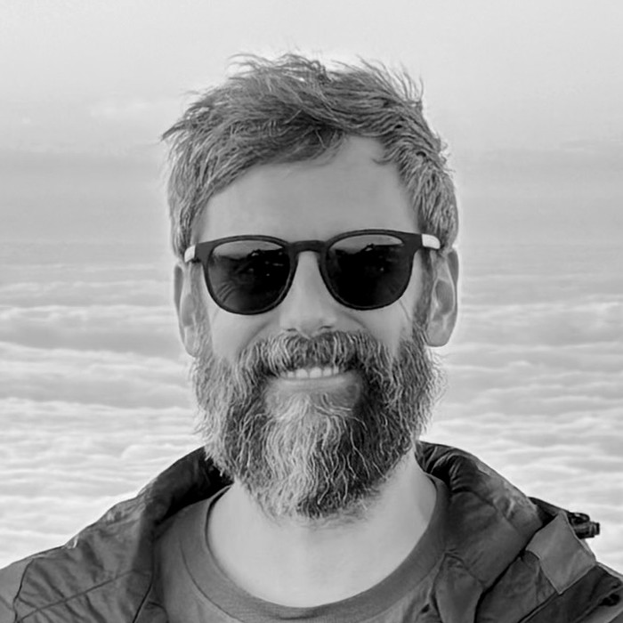

Rubén Sánchez-Janssen
Director, Isaac Newton Group of Telescopes
CV
Background
-
DirectorIsaac Newton Group of Telescopes, La Palma
-
Astronomer & Project ScientistUK Astronomy Technology Centre, STFC — Project & Instrument Scientist for MOSAIC (ELT), Principal Investigator for the UK's ELT instrumentation programme
-
Plaskett FellowNRC Herzberg Astronomy & Astrophysics, Victoria, Canada
-
ESO Fellow & VLT Support AstronomerEuropean Southern Observatory, Chile
-
PhD, AstrophysicsUniversidad de La Laguna & Instituto de Astrofísica de Canarias, Spain